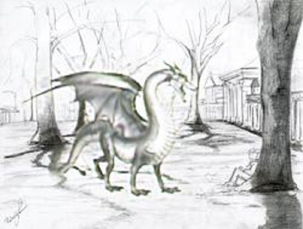
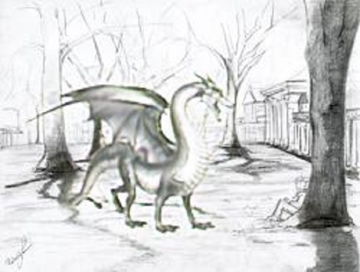

Image Harmonization using Single Image GANs
Project by Nicolai Skutsch (n.skutsch@tu-berlin.de)

In their paper Improved Techniques for Training Single-Image GANs [1] Tobias Hinz et al. proposed an improved version of the recently published approach of Single-Image GANs [2] and published their implementation. On this page I summarize the method especially for the use case of image harmonization and present my own implementation and results.
Motivation
In the field of computer graphics one big topic is image processing. Image processing is a broad topic and contains many different tasks. Here are some examples of image processing tasks in modern computer graphics:
| Image Inpainting | The goal of image inpainting is removing an unwanted object from an image and filling the gaps with realistic looking texture. |
| Image Manipulation | The goal of image manipulation is generating a novel image in the style of a given image by sketching the general structure of the novel image. |
| Image Generation | The goal of image generation is generating a novel image in the style of a given image but unconditionally and randomly. |
| Image Harmonization | The goal of image harmonization is harmonizing the texture of an object which has been inserted into an image. |
In the past, many procedures (like patch-based approaches for image inpainting [3]) have been developed to solve these tasks. But all these tasks have something in common. They can nowadays be solved using neural networks. This often allows for generally improved results. Because the structure of a neural network is different for each use case, I am focusing on image harmonization in this project.
Image Harmonization can be used for many real world applications. One use case is image compositing where an object gets added to the foreground of a picture, but for example the lighting of the new foreground and the background is inconsistent. [4][5] Another use case is adding objects to images with a completely different texture like paintings or drawings. [1][2] In all cases, an object is added to an existing image but looks strange because of the different textures of object and background. That is why the texture of the added object needs to be harmonized with regards to the texture of the image.
Method
To fully understand the structure of the neural network which is used in this project, I first want to explain the general structure of Generative Adversarial Networks (GANs). A GAN is a deep neural network architecture which implements unsupervised learning. The network consists of two networks: a generator network and a discriminator network. The two networks contest in zero-sum game during which the networks iteratively train each other. The goal is the generation of images that look realistic. Therefore, GANs are mostly used for image processing. These networks have several advantages compared to other neural networks. Firstly, GANs use unsupervised learning and therefore do not require labeled data. Furthermore, the generator can generate new data similar to real data and the discriminator can be used as classifier independent from the other network after the training. The general structure of a GAN is shown in the following figure. [6][8]
The general structure of a Generative Adversarial Network (GAN)
The generator network is using existing data or noise to generate new data. The primary goal of this network after training is the generation of data from a randomly generated or a noisy vector. The generator can be used for image generation or manipulation. The discriminator network tries to differentiate between real (ground truth) and generated data. During training, the generator first generates a random image. The discriminator tries to identify the generated image. The first network gets a penalty if the second network identifies the generated image correctly whereas the second network gets a penalty if it identifies the wrong image. The generator tries to fool the discriminator by creating more realistic images and the discriminator tries to outwit the generator by refining its criteria for estimating generated images. Both networks are guided by feedback in each iteration. The goal is to train the generator until the discriminator can no longer identify which image was generated. Both networks are trained simultaneously during the game until the network attains in Nash equilibrium state, in which the generator and discriminator loss converge. [6][7][8]
These GANs can be used for many image processing tasks like image inpainting but have one clear disadvantage: they require a large dataset and don't maintain the style or features of a single image from the dataset. That is why for use cases where the style and features of only a single image are important, like for image generation or image harmonization, a new approach has been proposed: the so called Single Image GANs (SinGANs). As their name suggests, SinGANs are GANs using only a single image as input. The discriminator works the same way as in a conventional GAN whereas the generator depends on the task. For unconditional image generation it receives static noise as an input and is trained to reconstruct the original image from the noise. For image harmonization it receives augmented versions of the original image and is trained to harmonize the augmentation with the original texture. This augmentation can be a change in color or an added color box. Additionally, the network uses stage-wise learning, which is shown in the next figure. [1][2]
The structure of the Concurrent Single Image GAN (ConSinGAN) proposed in the paper [1]
The discriminator of the ConSinGAN is structured like the discriminator in a conventional GAN. It consists of a single convolution block which further consists of multiple convolution layers. The convolutional layer consists of multiple filters. Every filter is moved patch-wise across the image and is applied to every patch, which is called moving window. These convolutional layers combined to a convolutional block help to reduce the input and extract import features for the decision. [6] The generator also consists of convolutional blocks. For each training stage, a new convolutional block gets added. Each stage represents a resolution of the input. Therefore, the generator first only consists of one convolutional block and is trained on a low resolution of the input image. When the training loss converges, another convolutional block is added sequentially to the network and a higher resolution of the input image is used for training. This approach allows the generator to be trained on the global structure (low resolution) and local texture consistency (high resolution) of the image. To prevent changing previous training results to much, the learning rate for previous stages gets decreased. Also only a fixed number of stages is trained simultaneously to prevent overfitting. [1][2]
Implementation
The original implementation has been done using the machine learning framework PyTorch. To fully understand the networks and algorithms, I re-implemented everything using the framework Tensorflow. First of all, I implemented the data preprocessing. This included loading the ground truth image and re-scaling it to different sizes, which results in a so called image pyramid containing the ground truth image in different scales. Another important part of the data preprocessing is the data augmentation. Most of the times, one or two monochromatic squares are added to the ground truth image of the correct size. The data augmentation is done randomly to increase the variation of the data during training. In the following figures an image pyramid and examples for data augmentation are shown.
The image pyramid for an example image from the dataset [1]
Some examples of data augmentation during the training of an example image from the dataset [1]
After having the training data available, I could start implementing the generator and discriminator networks. I used the same structure as suggested in the paper which I presented in the previous section. With the networks implemented I could start working on the training process. I started implementing a simplified version which did not include differentiating between different stages. I focused more on the export of first results to be able to visualize the results and therefore make debugging more easy. In the following figures the first results during the training are shown. The fake samples are results of the generator given a randomly augmented ground truth image as input whereas the reconstruction samples are the results of the generator given the ground truth image with a fixed noise as input.
The fake samples during the training of an example image from the dataset [1]

The reconstruction samples during the training of an example image from the dataset [1]
As it can be seen, while the generator worked for a fixed noise, it could not handle random data augmentation. I fixed this issue by changing the scope in which the activity of the networks contribute to their training. But I also encountered other problems. During the training of stage 4/5 the GPU ran out of memory. That was the moment I needed to implement the training process in more detail. A maximum of three stages of the generator should be trained at once with a decaying learning rate. In the following figure an example for the learning rate multiplier during the training of stage 4 is shown.
The learning rate multiplier of the stages of the generator as suggested in the paper [1]
Training only three stages at once was memory-efficient enough to work on my GPU because only the stages that are simultaneously trained are loaded into the memory. However, unlike Pytorch Tensorflow is currently not supporting optimizers with a different learning rate for different layers. So I experimented using multiple optimizers and training a different amount of stages at once. Some example results of the harmonization can be seen in the following figure.
One optimizer used and all stages trained at once
One optimizer for each stage used and all stages trained at once

One optimizer used and only the current stage trained
I could achieve the best results using only one optimizer and training only the current stage. Although the performance of the network is slightly worse (which can be seen in the section Results and Evaluation) it was a necessary work-around when using Tensorflow as framework. During the testing I used different activation functions. The impact of these activation functions can also be seen in the section Results and Evaluation.
| tanh activation function | $$f(x) = \tanh (x)$$ |
| ReLU activation function | $$f(x) = \max (0, x)$$ |
| Leaky ReLU activation function | $$f(x) = \left\{ \begin{array}{ll} x & \mbox{if } x > 0 \\ \alpha x & \mbox{if } x \leq 0 \end{array} \right.$$ |
After the training process has been completely implemented, only the evaluation was missing. To allow the model to be evaluated multiple times without training it more than once, the model needs to be saved. However, Tensorflow only allows to save the model if the call function of the network only has one parameter, but in this case the generator receives multiple inputs (the noise, the noise amplitude, and the shapes of the input). I therefore needed to save only the parameters of the model, then create a new model for the evaluation and load the old parameters. After implementing the evaluation, I could finally test the network on different data.
To train the model on a ground truth image, the following command can be used:
python train_model.py --training_image PATHTo evaluate the model regarding a ground truth image, the naïve approach with the object included, and optionally a mask, the following command can be used:
python evaluate_model.py --model_dir PATH --training_image PATH --naive_image PATH [--mask PATH]Results and Evaluation
To generate the results, the network first needs to be trained on a single ground truth image. After training the network, it can be used to harmonize the texture of an object, which has been inserted into the ground truth image. By additionally providing a mask, only the new texture is harmonized and smoothed into the background. The following results are all generated by using a mask.
Results on the provided test images
To allow a comparison between the network used in the paper and my own implementation of the network, I first trained and evaluated the network on the small dataset provided with the original paper. The dataset consists of ten different drawings and paintings, the same images containing a new object of different style, and a mask for each image to identify the inserted object. In the following, I present you my results (for a leaky ReLU activation function) compared to the results of the original paper and the naïve approach, which has been used as input for both of the networks. The quality from the naïve approach differs from both results because the resolution of the networks output is lower.
Naive approach
Reference result

My result

 

For most of the images I achieve similar or slightly worse results than the network provided with the paper. The worse results for the tractor and dragon image can be explained by the missing implementation of simultaneous multi-stage training and therefore only training a single stage at once. As long as the feature of layer-wise learning rates is not part of the Tensorflow implementation, PyTorch is clearly the better choice for this use case.
The results for the fish image and the scream are very different though. The texture of the added object gets harmonized by replacing it with a single color. Looking at the results during training narrowed the possible causes down. The harmonization during training looks like expected for the first stages. But during the training of the last stage, the generator only generated a monochromatic image for both the static noise and the augmented ground truth image as input. The error also rose fast but didn't change the result anymore. This error is reproducible for these exact images but I could not find the specific cause for this problem. A change of the activation function has a great impact on the results though as it can be seen in the following figures.
Lrelu (α = 0.05) activation

Relu (α = 0.3) activation
Tanh activation
The network has been trained with the scream image and the tractor image for comparison with different activation functions. With the leaky ReLU function and an α of 0.05 this results are equal to the ones presented above. Increasing the α to 0.3, which is originally the value proposed in the paper, made the results significantly worse. Changing to the tanh function though allowed the network to generate a working and decent looking result for the scream image, but also results in a worse result for the tractor image.
Although some images cause an error during training leading to no useful harmonization results, most of the images could be harmonized correctly and I could narrow the error for these few images down to the activation of the neurons of the layers.
Besides the quality of the results, I also want to address the performance of my implementation. Compared to the implementation provided with the paper, my network takes up to four times as long to train. This is most possibly caused by the eager execution mode of Tensorflow. This mode also allows numpy operations on tensors instead of exclusively tensor operations. This is currently necessary because some data augmentations and noise generations use numpy functions. Tensorflow creates a static computational graph during execution and therefore non-tensor operations have a high impact on the performance. PyTorch uses a dynamic graph instead and is not impacted much by non-tensor operations. To improve the performance in Tensorflow, the functions using numpy or other packages need to be rewritten into functions using only tensor operations.
Results on real world images
The network proposed in the paper has only been tested on paintings and drawings. I therefore wanted to further investigate the behavior of the network when it is fed real world photographs. To exclude any possible errors in my implementation, I used the implementation provided with the paper and used different photos as input. After training the network, I placed a football in each image and harmonized the texture. The results can be seen in the following figures.
Naive approach
Harmonization result
As the result for the snow landscape shows, the texture of the ball is harmonized well with the overall texture of the image. But as the other two results show, it is not well differentiated between a bright and a dark part of the image. The first image is overall very dark. That is why the ball is changed to a darker texture, although it lays in the bright part of the image. In contrast, in the third image the texture of the ball is not as dark as the surrounding shadow, because the overall image is brighter as the first one. So the image harmonization works well globally whereas the image harmonization does not generate a realistic looking result locally.
Future work
To generate reliable results for any kind of given input, the issue regarding the wrong result for some images needs to be further investigated and solved. To improve these results, a stage-wise learning rate scheduler for the optimizer would need to be implemented and added. Even though the saving and loading of the model is working, it is currently very inefficient, because a whole new model needs to be created before loading all the parameters. Merging the inputs of the generator to only one input tensor would allow the model to easily be saved and loaded, but also requires restructuring the whole code. To further increase the performance, Tensorflow eager execution can be disabled, but that also requires restructuring the whole code, because many functions need to be rewritten.
If this network should also be able to be used for photography, some sort of lighting recognition or a higher focus on local textures would be necessary to achieve good results. However, there is already research done in the field of image compositing (see TSAI, Yi-Hsuan, et al. Deep Image Harmonization. [5]) which may be more suitable for this use case.
References
- HINZ, Tobias, et al. Improved Techniques for Training Single-Image GANs. arXiv preprint arXiv:2003.11512, 2020.
- SHAHAM, Tamar Rott, et al. Learning a Generative Model from a Single Natural Image. In: Proceedings of the IEEE International Conference on Computer Vision. 2019. S. 4570-4580.
- NEWSON, Alasdair, et al. Non-local patch-based Image Inpainting. Image Processing On Line, 2017, 7. Jg., S. 373-385.
- CONG, Wenyan, et al. DoveNet: Deep Image Harmonization via Domain Verification. In: Proceedings of the IEEE/CVF Conference on Computer Vision and Pattern Recognition. 2020. S. 8394-8403.
- TSAI, Yi-Hsuan, et al. Deep Image Harmonization. In: Proceedings of the IEEE Conference on Computer Vision and Pattern Recognition. 2017. S. 3789-3797.
- BURKOV, Andriy. The hundred-page machine learning book. Quebec City, Can.: Andriy Burkov, 2019.
- YU, Jiahui, et al. Generative image inpainting with contextual attention. In: Proceedings of the IEEE conference on computer vision and pattern recognition. 2018. S. 5505-5514.
- AHIRWAR, Kailash. Generative Adversarial Networks Projects: Build Next-generation Generative Models Using TensorFlow and Keras. Packt Publishing Ltd, 2019.